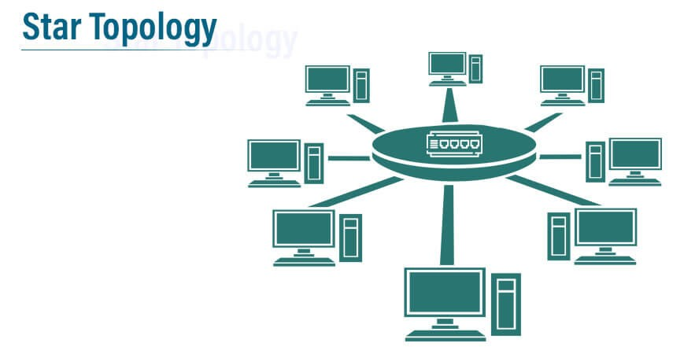
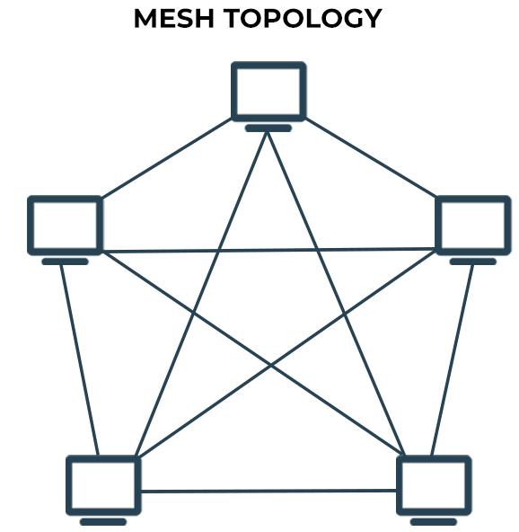
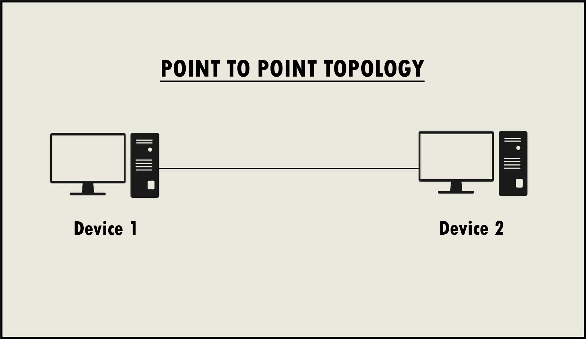

.jpg)
Networking is the process of connecting two or more computers in order to share common resources
Network is the connection between two or more computers with the purpose of sharing data or inormation.
NB:Internet is the bigest Wide Area Network (WAN).
NETWORK TOPOLOGY:
Network topology refers to the layout or arrangement of computers and devices on a communication network.
STAR TOPOLOGY:
Star topology is a type of topology where all computers/devices connect to a central device called hub or switch which distribute information from one central device to another.

STAR TOPOLOGY
| ADVANTAGES | DISADVANTAGES | |
|---|---|---|
| Easily expanded without disruption to the network. | Requires more cable. | |
| Cable failure affects only a single user. | A central connecting device allows for a single point of failure. | |
| Easy to troubleshoot and isolate problems. | More difficult to implement. |
BUS TOPOLOGY:
Bus topology is a type of topology which ses a trunk or backbone to which all of the computers on the network connect.
BUS TOPOLOGY
| ADVANTAGES | DISADVANTAGES | |
|---|---|---|
| Cheap and easy to implement. | Network disruption when computers are added or removed. | |
| Require less cable. | A break in the cable will prevent all systems from accessing the network. | |
| Does not use any specialized network equipment. | Difficult to troubleshoot. |
RING TOPOLOGY:
Ring topology is a type of topology whereby devices are conncted to each other in a circular form in a way that makes then a closed loop and data is transmitted from one device to another device arround the entire device in ond direction.

RING TOPOLOGY
| ADVANTAGES | DISADVANTAGES | |
|---|---|---|
| Cable faults are easily located, making troubleshooting easier. | Expansion to the network can cause network disruption. | |
| Ring networks are moderately easy to install. | A single break in the cable can disrupt the entire network. |
MESH TOPOLOGY:
Mesh topology is a type of topology in which each device is conncted to every other divice in the network through a dedicated point-point link.
 
MESH TOPOLOGY AND A POINT-POINT LINK.
| ADVANTAGES | DISADVANTAGES | |
|---|---|---|
| Provides redundant paths between devices. | Requires more cable than the other Local Area Network (LAN) topologies. | |
| The network can be expanded without disruption to current uses. | Complicated implementation. |